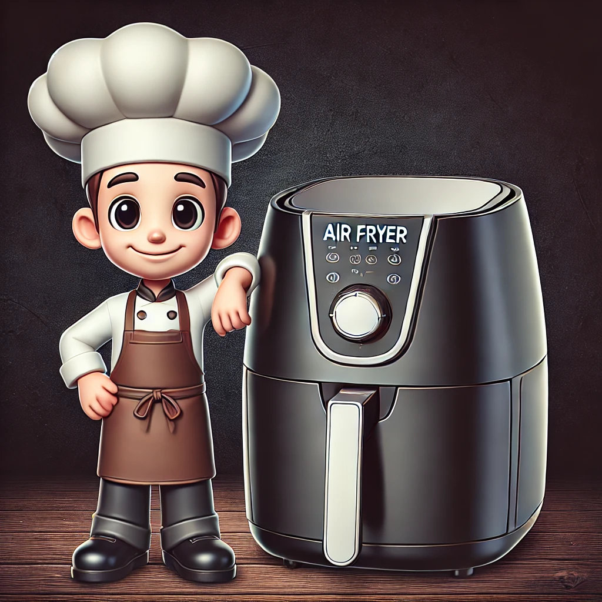

Best Air Fryer for Home Chefs
Air fryers have become an essential kitchen appliance for home chefs who want to prepare delicious, healthy meals quickly and efficiently. With the right air fryer, you can achieve professional-level cooking results in the comfort of your home. Here are some of the best air fryers for home chefs, chosen for their advanced features, versatility, and performance.
1. Ninja Foodi 8-Quart 9-in-1 Deluxe XL Pressure Cooker & Air Fryer
Key Features:
- 9-in-1 Functionality: Pressure cook, air fry, steam, slow cook, sear/sauté, bake/roast, broil, dehydrate, and make yogurt.
- TenderCrisp Technology: Combines pressure cooking and air frying for perfect textures.
- Large Capacity: 8-quart pot and a 5-quart Cook & Crisp Plate.
Why It's Great for Home Chefs:
The Ninja Foodi's versatility and large capacity make it ideal for home chefs who love experimenting with different cooking techniques. Its TenderCrisp Technology ensures perfectly cooked and crispy meals every time.
2. COSORI Smart WiFi Air Fryer 5.8-Quart
Key Features:
- Smart WiFi Control: Control your air fryer remotely using a mobile app.
- 11 Preset Functions: Easily cook a variety of dishes with one touch.
- 5.8-Quart Capacity: Ideal for family-sized meals.
Why It's Great for Home Chefs:
The COSORI Smart WiFi Air Fryer offers advanced technology that allows home chefs to monitor and control their cooking remotely. Its presets and large capacity make it versatile and convenient for everyday use.
3. Instant Vortex Plus 10-Quart 7-in-1 Air Fryer Oven
Key Features:
- 7-in-1 Functionality: Air fry, bake, roast, toast, broil, dehydrate, and rotisserie.
- EvenCrisp Technology: Ensures perfect crispiness every time.
- Large Capacity: 10-quart capacity, perfect for family meals.
Why It's Great for Home Chefs:
The Instant Vortex Plus’s large capacity and multiple functions make it an excellent choice for home chefs who want to prepare a variety of dishes. Its EvenCrisp Technology ensures consistently delicious results.
4. Breville Smart Oven Air Fryer Pro
Key Features:
- Super Convection Technology: Reduces cooking time and ensures even cooking.
- 13 Cooking Functions: Air fry, bake, roast, broil, dehydrate, and more.
- Large Capacity: Fits a 14-pound turkey or 9 slices of bread.
Why It's Great for Home Chefs:
The Breville Smart Oven Air Fryer Pro is a powerful and versatile appliance that can handle a wide range of cooking tasks. Its super convection technology ensures fast and even cooking, making it a favorite among home chefs.
5. Philips Premium Airfryer XXL
Key Features:
- Fat Removal Technology: Reduces and captures excess fat.
- Rapid Air Technology: Ensures even cooking and crispiness.
- Extra Large Capacity: Fits a whole meal, including large portions.
Why It's Great for Home Chefs:
The Philips Premium Airfryer XXL’s advanced features and large capacity make it perfect for home chefs who want to prepare healthy, delicious meals. Its fat removal technology helps make meals healthier without sacrificing flavor.
Conclusion
For home chefs, having the right air fryer can make all the difference in creating delicious, healthy meals with ease. The models listed above offer advanced features, large capacities, and versatile cooking functions, making them perfect for any home chef looking to elevate their culinary skills.